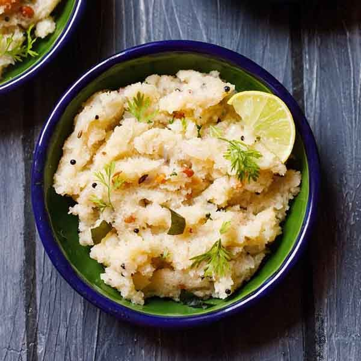

Upma

Description
Upma is a flavorful, tasty, savory and popular South Indian breakfast that is made with cream of wheat
or semolina flour (called rava or suji), a few lentils, nuts, vegetables, herbs and spices.
This traditional dish involves cooking roasted rava in water that has been flavored by ghee (or oil),
cashews, urad dal (white lentils), chana dal (husked and split bengal gram), onion, ginger and additional
herbs and spices. Sugar can be added for a mildly sweet and savory dish.
Ingredients
- Semolina
- Ghee
- Mustard seeds
- Onion
- Green Chilli
- Salt
- Coriander
Instructions
- Finely chop 1 medium sized onion, 1 to 2 green chillies and 1 inch ginger and some coriander leaves.
- Begin to roast the rava. Stir often while roasting the rava. Switch off the flame and then add the roasted rava in a plate and keep aside.
- In a pan, heat ghee or oil. add the mustard seeds. Fry till they begin to brown a bit or get lightly golden
- Now add the finely chopped onions. Saute the onions till they become translucent.
Then add the chopped green chilly, ginger, curry leaves. Sauté for a few seconds. You can also add 1 dried red chilli at this step.
- Then add 2.5 cups water, sugar and salt as required. Mix well and check the taste of water. It should be a bit salty but not too much.
- When the water comes to a rolling boil, lower the flame to its lowest. Then add the rava in 4 to 5 batches with a spoon.
Once you add the rava, mix and stir immediately. The entire batch of rava should get mixed with the water evenly. Then add the next batch of roasted rava. Mix and stir again.
- Quickly stir and mix well. The rava grains absorb water and thus swell and get cooked.
Cover and allow the rava upma to steam for 2 to 3 minutes on a low heat.
Then switch off the flame. Here the rava is cooked and the upma is ready.